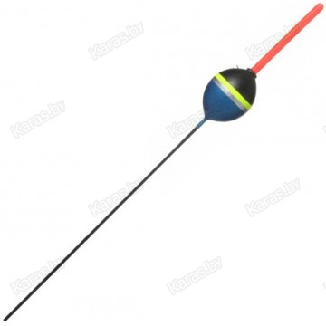

Рыболовный магазин
Пн-Пт:
с 9.00 до 20.00/
Сб.
с 9.00 до 18.00/
Вс. выходной
Главная
ПОПЛОВКИ
ЛЕСКА
КРЮЧКИ
ПОПЛОВКИ
УДОЧКИ
КОРМУШКИ
НАЖИВКА
Поплавок Vabik Optima Vilia (1.0 - 6.0 г)
Стоимость со СКИДКОЙ!:2.30 руб в место 3.50!

Поплавок Salmo PU 505 (2.0 - 4.0 г)
Стоимость:2.99 руб